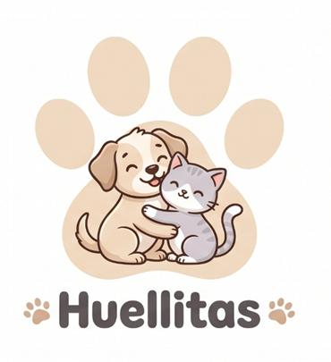

Comprender cómo un equipo profesional transforma las necesidades de un negocio de servicios y productos para mascotas en una solución web completa, interactiva y accesible: analizar, diseñar, desarrollar, probar y preparar la entrega.
| Cliente simulado | Huellitas: Spa, Veterinaria & Tienda Oficial |
| Tipo de solución | Plataforma web informativa y transaccional con catálogo e-commerce, cotizador interactivo de suscripción mensual para mascotas, spa sin jaulas, carrito dinámico, autenticación y panel administrativo. |
| Usuarios principales | Tutores de perros y gatos que desean agendar servicios veterinarios y spa bajo metodología Fear-Free (cero miedo), adquirir productos premium o suscribirse a cajas mensuales; además de administradores del negocio. |
| Tecnologías base | HTML5 semántico, CSS3 moderno (Custom Properties, Flexbox, CSS Grid), JavaScript vanilla ES6+ (DOM reactivo, LocalStorage/SessionStorage), PHP 8 y base de datos relacional MySQL (huellitas_db). |
| Alcance | Prototipo funcional completo con catálogo de 12 productos filtrables, wizard de suscripción en 3 pasos con cálculo en tiempo real de ración (g/día), carrito drawer reactivo con simulación de pasarela de pago (Nequi, Daviplata, Tarjeta), modal de inicio de sesión visual con roles (Administrador y Cliente), y repositorio oficial versionado en GitHub. |
A diferencia de los sitios web convencionales de tiendas para animales, Huellitas integra el concepto Fear-Free (cero estrés) en su experiencia digital:
Huellitas es un centro integral de bienestar para mascotas que ofrece spa sin jaulas, medicina preventiva veterinaria y una tienda especializada. Ante el crecimiento de tutores que buscan un trato digno y libre de miedo para sus animales, la marca requiere una presencia digital que no solo informe, sino que permita personalizar la alimentación mensual de cada perro o gato, visualizar el catálogo de productos y agilizar el contacto con especialistas.
El equipo de desarrollo conformado por Emmanuel Morales y Juan Ricardo Londoño asumió el reto de diseñar, construir y desplegar una plataforma robusta y adaptable que combine las buenas prácticas del frontend moderno con la calidez visual de la marca.
En la industria de software, un proyecto exitoso requiere la confluencia de responsabilidades especializadas:
| Rol profesional | Responsabilidades en Huellitas | Entregable o evidencia |
|---|---|---|
| Product Owner | Prioriza el valor del negocio: modelo de suscripción mensual, catálogo de 12 productos y política Fear-Free. | Backlog priorizado y criterios de aceptación. |
| Business Analyst | Levanta requerimientos con tutores y veterinarios; documenta historias de usuario de compra y agendamiento. | Especificación de requisitos funcionales y no funcionales. |
| UX Designer | Diseña el flujo del wizard de 3 pasos, la disposición del carrito drawer y la facilidad de navegación móvil. | Arquitectura de información y wireframes. |
| UI Designer | Crea el sistema de diseño: paleta cálida (beige, café, terracota), tipografía Nunito y medallón del logo. | Guía de estilos, componentes y mockups finales. |
| Frontend Developer | Codifica HTML5 semántico, CSS3 modular (Grid/Flexbox) y JavaScript ES6+ reactivo para el carrito y el wizard. | Código fuente limpio y ejecutable en navegador. |
| Backend Developer | Estructura la base de datos relacional MySQL y los endpoints PHP de autenticación y consulta de usuarios. | Esquema SQL (huellitas_db) y API REST. |
| QA Tester | Diseña y ejecuta el plan de pruebas: cálculos de ración, responsividad, validación de formularios y cross-browser. | Matriz de pruebas y reporte de casos aprobados. |
| DevOps | Administra el control de versiones con Git, sincroniza el repositorio GitHub y configura el entorno en Apache. | Repositorio GitHub y checklist de despliegue. |
| Project Manager | Coordina los hitos del proyecto guiado, seguimiento de tareas y asegura los estándares de entrega de la UCaldas. | Cronograma y documentación final en PDF. |
En este proyecto, Emmanuel Morales y Juan Ricardo Londoño asumieron roles cruzados: Emmanuel lideró la arquitectura de datos, backend PHP/MySQL, DevOps (Git/GitHub) y lógica de suscripción; Juan Ricardo lideró el diseño visual UI/UX, maquetación frontend, interactividad del carrito y aseguramiento de calidad (QA).
Es fundamental diferenciar los actores (quienes interactúan con la solución construida) de los roles del equipo (quienes planifican y programan la solución).
| Actores del sistema (Usuarios) | Roles del equipo de desarrollo |
|---|---|
|
• Tutor / Visitante: Consulta catálogo, calcula ración de su mascota, añade a carrito y contacta. • Miembro Suscriptor: Cuenta activa con recurrencia mensual y beneficios exclusivos. • Administrador: Consulta métricas de clientes y gestiona el inventario. |
• Product Owner & Business Analyst: Negocio y alcance. • UX & UI Designer: Usabilidad y estética visual. • Frontend & Backend Dev: Implementación y lógica. • QA, DevOps & PM: Pruebas, despliegue y control. |
El sitemap organiza las secciones de la página de forma intuitiva mediante anclas semánticas que permiten una navegación fluida en una sola página (Single Page Application orientada al usuario):
Inicio (Huellitas: Spa, Veterinaria & Tienda)
├── #inicio ........... Hero principal con eslogan "Cero Miedo", badges de confianza y accesos rápidos
├── #tienda ........... Catálogo oficial con 12 productos divididos en Alimento, Spa, Accesorios y Juguetes
├── #servicios ........ Sesión Spa & Corte a tijera ($50.000) y Consulta Veterinaria Fear-Free ($70.000)
├── #suscripcion ...... Creador interactivo de Caja Mensual (Club Huellitas) con Wizard de 3 Pasos
├── #galeria .......... Feed social interactivo multicanal (Instagram, TikTok, Facebook, X) con botón Me Gusta
├── #mision-vision .... Propuesta institucional, filosofía de bienestar sin jaulas y pilares del cuidado
├── #contacto ......... Canales de atención (WhatsApp directo), horarios y sedes en Medellín y Bogotá
└── Modales de Superposición
├── #authModalOverlay ..... Acceso / Registro interactivo con logotipo oficial y accesos Demo
├── #cartDrawer ........... Carrito lateral reactivo con resumen de ítems y botón de checkout
├── #paymentModalOverlay .. Pasarela simulada multicanal (Nequi, Daviplata, Bancolombia, PSE, Tarjeta)
└── #adminModalOverlay .... Panel de administración para visualización de usuarios y métricas
El diseño prioriza la jerarquía visual: logotipo emblemático en cabecera fija, botones de acción inmediata ("call to action"), microinteracciones al pasar el cursor y modales no intrusivos que no interrumpen la navegación del usuario.
El árbol de elementos HTML5 refleja una estricta semántica estándar para indexación y accesibilidad:
body
├── div.ambient-bg-stage (Slideshow de fondo suave en intervalo lento)
├── header.header (Fijo con blur translúcido)
│ ├── a.logo-wrapper (Emblema oficial de Huellitas enmarcado con halo dorado)
│ ├── nav.nav-links (#inicio, #tienda, #servicios, #suscripcion, #galeria, #contacto)
│ └── div.header-right-actions (Píldora de cuenta activa, atajo al Club y botón de Carrito)
├── main
│ ├── section.hero#inicio (Título h1, eslogan, píldoras estadísticas +2.400 mascotas)
│ ├── section.productos#tienda (Filtros por categorías, 12 cards con details/summary)
│ ├── section.servicios#servicios (Cards de Spa y Veterinaria con fotos reales)
│ ├── section.suscripcion-section#suscripcion (Formulario Wizard de 3 pasos)
│ │ ├── nav.wizard-progress-wrap (Barra de progreso visual animada: 33%, 66%, 100%)
│ │ ├── div.wizard-step-pane (Paso 1: Perro vs Gato, sliders interactivos de peso)
│ │ ├── div.wizard-step-pane (Paso 2: Selección de receta y día de entrega 5, 15 o 28)
│ │ └── div.wizard-step-pane (Paso 3: Servicios adicionales de spa y resumen total)
│ ├── section.galeria#galeria (Tarjetas de redes sociales con contadores de likes)
│ └── section.contacto#contacto (Formulario de contacto, mapa y WhatsApp)
├── footer.footer (Derechos de autor para Análisis y Diseño de Soluciones WEB)
└── Componentes Flotantes (Botón dock de suscripción, Auth Modal, Cart Drawer, Modal Pago)
El código HTML utiliza elementos semánticos estándar de la W3C, asegurando legibilidad, accesibilidad para lectores de pantalla y soporte nativo de navegación por teclado:
<!-- Cabecera con Logo Oficial Protagonista y Navegación -->
<header class="header">
<div class="container header-container">
<a href="#inicio" class="logo-wrapper" aria-label="Ir al inicio de Huellitas">
<div class="brand-logo-frame">
<span class="logo-halo-ring" aria-hidden="true"></span>
<img src="img/logo-huellitas.jpg" alt="Logo Oficial Huellitas" width="370" height="405" class="brand-logo-img">
</div>
<div class="logo-text-group">
<span class="brand-pill-top"><i class="fas fa-paw"></i> Huellitas</span>
<span class="brand-subtitle">Spa • Veterinaria • Tienda</span>
</div>
</a>
<nav class="nav-links" id="navLinks" aria-label="Navegación principal">
<a href="#inicio" class="nav-link active">Inicio</a>
<a href="#tienda" class="nav-link">Tienda</a>
<a href="#servicios" class="nav-link">Servicios</a>
<a href="#suscripcion" class="nav-link nav-link-highlight"><i class="fas fa-crown"></i> Suscripción</a>
<a href="#contacto" class="nav-link">Contacto</a>
</nav>
</div>
</header>
La apariencia visual se fundamenta en un sistema de variables CSS (Custom Properties) que define la paleta Fear-Free, espaciados y curvaturas suaves:
:root {
/* Paleta cromática oficial Huellitas (Fear-Free) */
--color-fondo: #FBF8F3; /* Beige crema suave */
--color-hueso: #F5EFE6; /* Arena claro para superficies */
--color-beige-oscuro: #E2D3BE; /* Líneas sutiles de separación */
--color-texto: #4A3B32; /* Café oscuro legible para lectura prolongada */
--color-texto-suave: #6F5E53; /* Café intermedio para subtítulos y descripciones */
--color-texto-muted: #8E7A6E; /* Tono atenuado para notas secundarias */
--color-acento: #E09F5E; /* Terracota cálido de llamada a la acción */
--color-acento-hover: #C9823F; /* Resalte interactivo al pasar el cursor */
--color-verde-menta: #68B0AB; /* Verde médico para citas veterinarias */
--color-blanco: #FFFFFF; /* Tarjetas y modales de contenido */
/* Tipografías y radios */
--font-principal: 'Nunito', -apple-system, BlinkMacSystemFont, 'Segoe UI', Roboto, sans-serif;
--radius-sm: 8px;
--radius-md: 14px;
--radius-lg: 22px;
--radius-full: 9999px;
--transition: all 0.25s cubic-bezier(0.4, 0, 0.2, 1);
}
/* Reset y caja flexible */
* { box-sizing: border-box; margin: 0; padding: 0; }
body {
font-family: var(--font-principal);
background-color: var(--color-fondo);
color: var(--color-texto);
line-height: 1.6;
}
/* Rejilla de productos responsive con auto-fit */
.productos-grid {
display: grid;
grid-template-columns: repeat(auto-fit, minmax(240px, 1fr));
gap: 1.5rem;
}
@media (max-width: 768px) {
.header-container { flex-wrap: wrap; }
.productos-grid { grid-template-columns: repeat(2, 1fr); gap: 1rem; }
}
El comportamiento dinámico se programa con JavaScript vanilla, manteniendo el código libre de sobrecargas:
Gramos = Peso (kg) × Factor (15g perro / 12g gato), actualizando insignias y resumen de pago de forma inmediata.Se estructuró una matriz de pruebas de aseguramiento de calidad verificando funcionalidad, usabilidad y rendimiento:
| Módulo / Prueba | Resultado esperado | Evidencia / Método de verificación | Estado |
|---|---|---|---|
| Navegación | Los enlaces ancla (#tienda, #suscripcion, etc.) desplazan suavemente al usuario a la sección exacta. | Inspección de scroll y verificación de enlaces en cabecera y pie. | APROBADO ✅ |
| Catálogo Tienda | Se visualizan los 12 productos con foto, precio y menú desplegable "Ver qué incluye". | Prueba visual y toggle interactivo de los elementos details/summary. | APROBADO ✅ |
| Carrito Drawer | Al pulsar "Añadir al Carrito", se abre el drawer, suma el ítem y actualiza el total en COP. | Adición de múltiples productos, edición de cantidades y eliminación. | APROBADO ✅ |
| Wizard Suscripción | Al mover el slider de peso (ej. 12 kg), el badge calcula automáticamente 185 g/día. | Modificación dinámica del slider y avance a los pasos 2 y 3. | APROBADO ✅ |
| Autenticación Visual | El modal muestra el logo de Huellitas, permite alternar pestañas y usar accesos demo de 1 clic. | Prueba de inicio de sesión como Admin y Cliente; actualización de píldora. | APROBADO ✅ |
| Pasarela de Pago | Permite seleccionar Nequi, Daviplata o Tarjeta con instrucciones dinámicas y botón de confirmación. | Selección de medio de pago y generación de confirmación con toast. | APROBADO ✅ |
| Adaptabilidad Móvil | La interfaz se adapta a pantallas de 360px a 1440px sin desbordamiento horizontal. | Emulación de dispositivos en DevTools (iPhone, Galaxy y Desktop). | APROBADO ✅ |
| Carga y Rendimiento | Carga inmediata de estilos e imágenes con política de lazy loading para recursos diferidos. | Auditoría de red en navegador con tiempo de carga inferior a 2 segundos. | APROBADO ✅ |
Para asegurar la reproducibilidad y entrega formal del proyecto, se estableció un flujo de control de versiones y hosting estructurado:
main.https://github.com/Emmanuel1614/huellitas.http://localhost/huellitas/).index.html, style.css y script.js debidamente optimizados.api/db.php, api/auth.php y esquema SQL con usuario administrador preconfigurado.
1. ¿Por qué los actores del sistema no son lo mismo que los roles del equipo? Porque los actores representan los perfiles de usuario que disfrutan de la solución, mientras que los roles del equipo representan los oficios de ingeniería que la hacen posible.
2. ¿Qué ventaja tiene validar la experiencia visual antes del acoplamiento a base de datos? Permite ajustar la usabilidad, la empatía y la retroalimentación visual con el cliente sin generar fricciones o bloqueos técnicos tempranos.
3. ¿Cuál es el impacto de una arquitectura modular en CSS y JS? Garantiza que el código pueda escalar fácilmente de una sola página hacia una aplicación web progresiva completa sin rehacer la base.
El desarrollo de Huellitas demuestra cómo la combinación metódica entre análisis de negocio, diseño centrado en el usuario (UX/UI) y programación limpia produce soluciones profesionales de alto impacto. Un equipo no empieza programando al azar: investiga la necesidad, modela las historias de usuario, valida prototipos y verifica la calidad con rigor.
Una web de calidad para el cuidado animal no se define únicamente por líneas de código, sino por la capacidad del equipo de comprender la empatía entre el tutor y su mascota, traduciéndola en una experiencia digital cálida, intuitiva y transparente.

El presente documento certifica la formulación, diseño, implementación y pruebas de la plataforma web Huellitas: Spa, Veterinaria & Tienda como evidencia de aprendizaje del curso.
| Asignatura: | Análisis y Diseño de Soluciones Web |
| Programa: | Técnico en Programación Web • U en tu pueblo |
| Institución: | Universidad de Caldas (Facultad de Ingenierías) |
| Docente a cargo: | Ingeniera Angela Andrea Suarez Arango |
| Desarrolladores: | Emmanuel Morales & Juan Ricardo Londoño |
| Repositorio GitHub: | github.com/Emmanuel1614/huellitas |
| Estado de entrega: | COMPLETO Y COMPROBABLE ✅ |